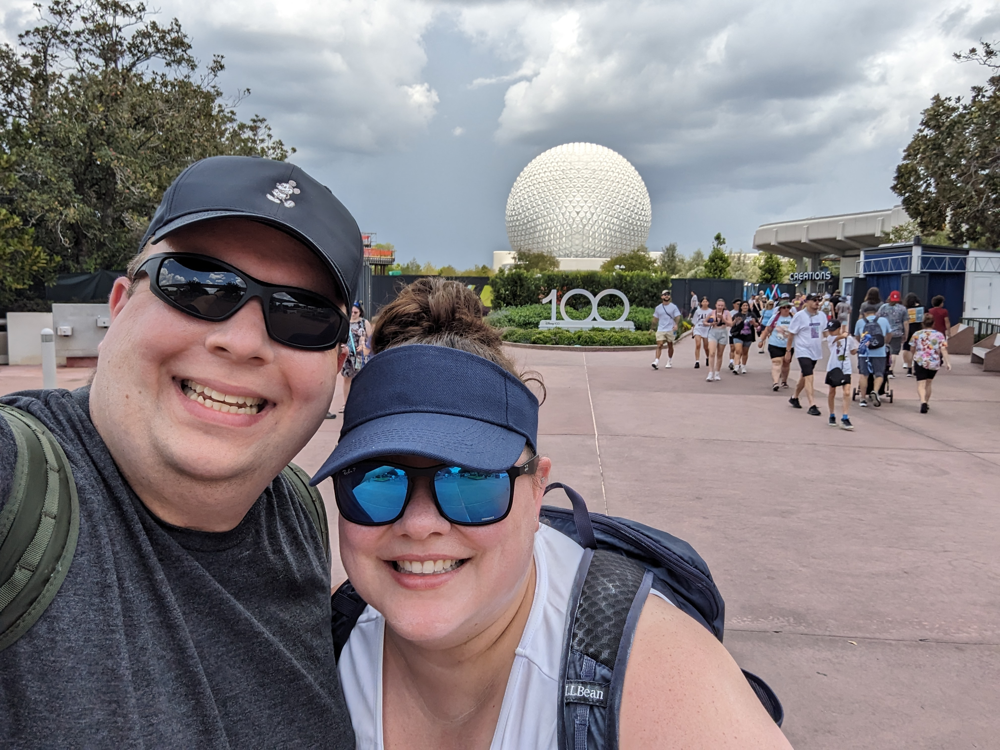

Disney Engineered

Besides world-class entertainment, immersive story-driven rides, and fine dining where you can eat filet mignon 3 times a day [1], the engineered efficiency of Disney World is absolutely top-tier. That makes it all the more fun to find situations that can be improved. Our most recent trip in August 2023 provided a few:
In order to enter the parks, you must scan either an RFID-based MagicBand(TM) which is like a digital watch without all the excitement, or an RFID-based card, which is like a Disney-branded RFID card. Disney has correctly anticipated that the park entrance lines will be extremely busy, especially during park opening, and has therefore placed 2 RFID scanners at the head of every entrance line.
Ideally, the head of each line splits and uses these scanners in parallel, moving the line twice as fast. However, these scanners are situated one after another as you walk in, instead of side-by-side. For those of us who understand how to walk in crowded places, this isn’t a problem: I would walk past the first scanner and use the second, while Lucy stops at and uses the first. Scanning completes at roughly the same time, and we both proceed efficiently into the park. Unfortunately the majority of people cannot fathom that their body takes up physical space in this world, and stop one-at-a-time at the first scanner, leaving the second scanner empty and the scan points operating around 50% occupancy.
The obvious fix for this is moving the scan points to be next to each other and therefore obviously parallel, except that there is no physical space to do so (probably the reason why Disney depth-stacked scan points already). One more piece of background information: scan points can both animate a circle and light up with different colors (currently white for “scanning”, blue for some different events, and green for “success”). I assume at least several other colors are possible.
I propose a software-only upgrade that can mitigate, although probably not fix entirely, poor user behavior. The first scan point should be lit with a red “error” state, and the second point with a green “ready” state. Upon the second point registering a scan starting, the first point becomes green and ready to scan. Upon successful scan, either scan point transitions from green to white or blue for success. Based on the public’s general success at traffic lights, this should make people believe they must bypass the first scan point if it is red, increasing usage of the second scan point and overall throughput.
Based on further observations of people who are severely underprepared for the rigors of Disney, those using simple cards appeared to be significantly less able to scan efficiently than those with MagicBands. Not knowing where the cards are, having a stack of 6+ individually-registered cards in the pocket of a single person, having small children see these cards for the very first time while in line, and realizing they needed to scan their card (ticket) at all to enter the park were some of their problems. This should be solved by separating entire lines for these “projected to be slow” users - card-only lines and MagicBand-only lines.
Another significant inefficiency takes place at the best ride in EPCOT: Soarin’ Around the World. This ride takes 3 sets (A, B, C) of 3 rows (1, 2, 3) of guests, into a theater at a time, and is fairly slow to load. Row 1 is seated furthest into the theater, then row 2, then row 3 is nearest the theater entrance doors. The problem is that they allow row 3 into the theater first, followed by 2, then 1. Which means that guests headed for seats in row 3 block the entrance of both 2 and 1, and those headed for 2 block 1. Being the last, row 1 blocks nobody and loads in n time. Total loading time is therefore O(r + 2r +3r) = O(6r). Since r is 1/3n of total capacity, this becomes O(2n) of total riders.
A better solution would be to load riders furthest into the theater first, so that no row is blocked by riders finding their seats and everyone can progress at walking speed the whole time. This would load the ride in row order 1, 2, 3. O(r + r + r) = O(3r) = O(n). Half the time!!!
As luck would have it, our MinnieVan back to the resort hotel one night was driven by Abby, a Disney College Program(TM) grad who previously worked on Soarin’. Although her driving was a little slower than Frank the Tank’s Test Track simulation the day before, we learned a lot more about Soarin’ [2]. Apparently, Disney loads in the “slow” configuration on purpose because there are also guests exiting the ride at exactly the same time, so the theater is both emptying and filling at once. In order to allow this probably larger efficiency, Disney intentionally slows down loading so that there is less confusion in the theater overall.
- Yes.
- Ask for B2. This puts you at the focal point of the IMAX screen and is therefore the best possible seat.